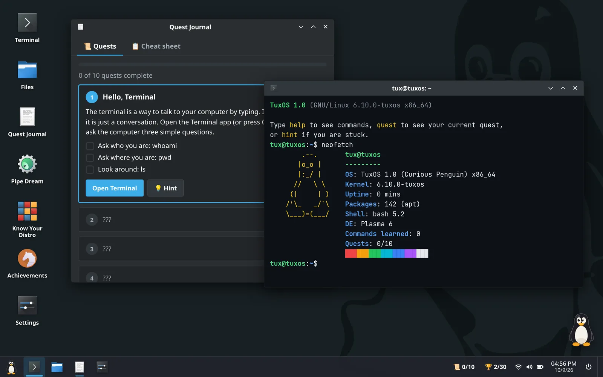

Learn Linux by playing
Tuxplore is a free game that boots TuxOS, a pretend Linux computer, right in your browser. You learn the terminal by going on quests, solving puzzles and playing games, with Tux the penguin giving hints along the way. Nothing is installed and nothing on your real computer is touched.

Who it's for
People who have never used Linux, students who keep hearing about the terminal, and teachers who want a safe, hands-on way to introduce it. If you can type and click, you can play. You don't need to know anything about Linux first.
What you'll learn
TuxOS has a bash-like terminal with about 60 real commands, pipes, redirection, wildcards, tab completion, history and man pages. Everything you practise works the same on a real Linux computer.
Moving around
ls, cd, pwd, tree, find, and what /, ~ and .. mean.
Reading and searching text
cat, grep, head, tail, wc, sort, uniq, cut, tr.
Changing files
mkdir, cp, mv, rm, and permissions with chmod.
Being the administrator
sudo, the root account, and installing software with apt, dnf and pacman.
Pipes
Chaining small tools, like grep ERROR syslog | wc -l, in the terminal and in the Pipe Dream puzzle game.
Editors
nano, and vim (escaping it is an achievement).
Ten quests
A short story about rescuing Tux's stolen crown, where each quest teaches one real skill.
- Hello, Terminal: your first commands,
whoami,pwdandls. - A Letter from Tux: reading files with
cat, and tab completion. - Into the Dungeon: directories with
cd, and hidden files withls -a. - The Library: searching inside files with
grep -r. - The Locked Gate: scripts and execute permission with
chmod +x. - Goblin Trouble: deleting with
rmand the*wildcard. - The Superuser:
sudo, root,mkdirandcp. - The Plumber: pipes, in the Pipe Dream game and for real.
- The App Store: package managers:
apt,dnfandpacman. - Graduation: show off with
neofetch, then find your first real distro.
Four desktop environments
On Linux you choose how your desktop looks and works. TuxOS lets you try four of them, each with its own panels, menus, window buttons, icons, shortcuts and login screen. You start on KDE Plasma and unlock the rest by finishing quests.
- KDE Plasma
- A taskbar and an app launcher, a lot like Windows. Used by Kubuntu, KDE neon and the Steam Deck.
- GNOME
- A top bar and the Activities overview. The default on Fedora and Ubuntu.
- CDE
- The Common Desktop Environment of 1990s Unix workstations, with its Front Panel and four workspaces.
- Hyprland
- A modern tiling window manager: windows arrange themselves and you drive it from the keyboard.
Know Your Distro
An endless runner where Tux collects Linux distributions from the family you pick: Debian, Red Hat, Arch, Slackware or Gentoo, 32 distros in all. It's a fun way to learn that Ubuntu comes from Debian, Fedora from Red Hat and Manjaro from Arch.
Then try the real thing
When you graduate, the Try Linux app asks four questions and suggests a real distro to start with, such as Linux Mint, Ubuntu or Fedora. It then shows how to try it from a USB stick without changing anything on your computer.
Questions
Is Tuxplore free?
Yes, completely, with no ads. The source code is on GitHub, free to use for learning, teaching and other noncommercial purposes.
Do I need to install anything?
No. It runs in any modern browser on a laptop or desktop computer.
Does it work on a phone?
Not really: an operating system needs a keyboard and a big screen. Phones get a friendly message with a link to open it on a computer.
Is it real Linux?
No. TuxOS is a simulation: a bash-like shell over a pretend file system, made for learning. Nothing you type can harm your computer. Even sudo rm -rf --no-preserve-root / only crashes TuxOS, and a reload brings it back.
Do I need an account?
No. You can play without one and your progress stays in your browser. A free account (just a username and password, no email) saves your progress online so you can carry on from another computer.
What data do you collect?
Only anonymous counts, like "a quest was finished", with no cookies or IDs, and you can turn it off. Every number is on the public stats page.